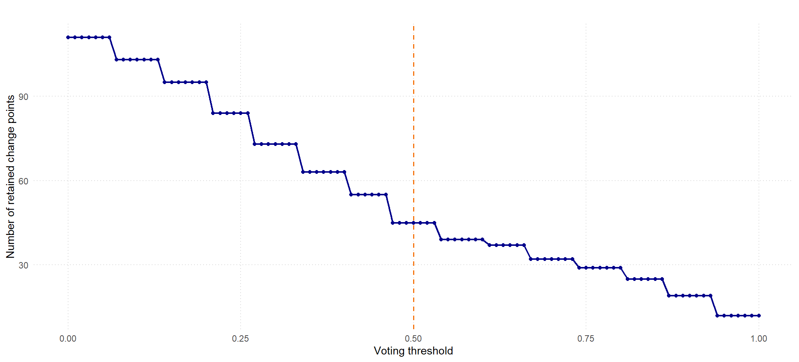

This example applies change-point detection to hourly Bitcoin closing prices. The data are derived from the Bitcoin Historical Data dataset on Kaggle, which contains minute-level OHLC prices and trading volume.
Following the Python analysis, the largest candidate window is \(\lfloor n^{2/3}\rfloor\). The package helper selects 15 default window sizes between 100 hours and that upper bound.
n <-nrow(btc_hourly)window_sizes <-default_window_sizes( n,min_window =100,max_window =floor(n^(2/3)),n_windows =15,seed =1000)window_sizes
The closing prices are standardized before detection. Standardization changes their units but preserves the locations of mean shifts.
x <-as.numeric(scale(btc_hourly$Close))
6.3 Detect Changes in Mean
The Python voting threshold of 0.625 corresponds to vote_threshold = 0.625 in scan_cpd(). The R interface uses n_boot and random_state for bootstrap calibration and reproducibility.
The vote scree shows how much support each candidate location receives across the selected window sizes. The horizontal threshold corresponds to the vote_threshold = 0.5 used above.
vis_vote_scree(fit_btc)

Caution
Bitcoin prices are strongly trending and serially dependent. Detected changes identify shifts in the mean price level; they should not be interpreted as causal market events.